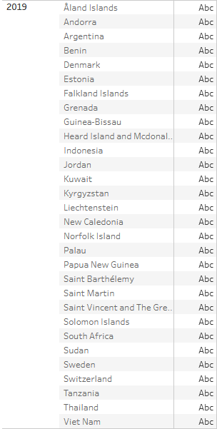

Lab 4.2
Countries Most Visited
Most visited countries with twice each are Andorra, Cyprus, Denmark, Indonesia, Martinique, Myanmar, Palau, South Africa, South Sudan, Sweden, and Thailand.
Timeline of Country Visits
Here, we'll explore how many countries were visited in each year.
In 2018, there were 8 countries visited.

In 2019, there were 30 countries visited.
In 2020, there were 27 countries visited.
And in 2021, there were 3 countries visited.
Back to Home